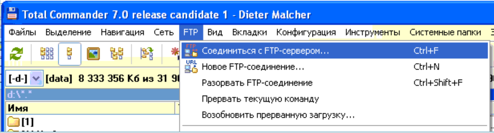
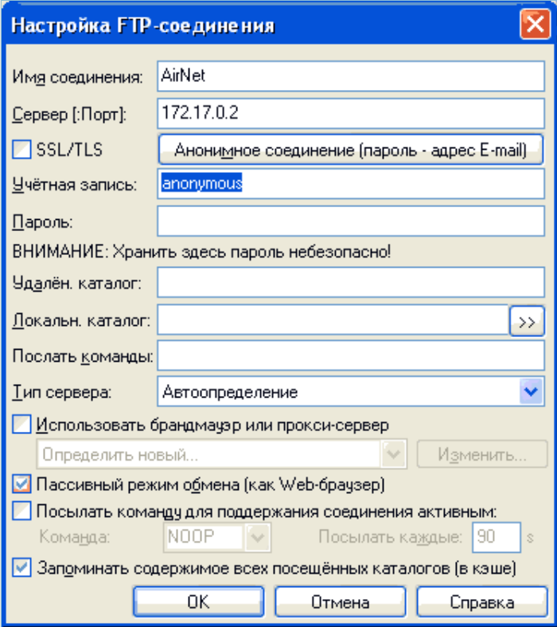

АІРНЕТ - інтернет провайдер
Головна
Ми - швидкозростаюча компанія, заснована у 2010 році в місті Карлівка, Полтавській області.
За цей час ми продемонстрували швидкий темп росту в умовах жорсткої конкуренції. Ключовим фактором
нашого успіху стало вміле використання передових технологій та впровадження якісного обладнання.
Наші мережі побудовані на основі високошвидкісних оптоволоконних каналів передачі даних, що надає можливість практично необмежено масштабувати швидкість обміну інформацією. Система зовнішніх каналів максимально оптимізована, і завдяки співпраці з передовими операторами магістрального зв'язку, ми маємо максимальну резервацію каналів. Завдяки цьому ми можемо задовольнити будь-які вимоги клієнтів на найвищому рівні:
Наші мережі побудовані на основі високошвидкісних оптоволоконних каналів передачі даних, що надає можливість практично необмежено масштабувати швидкість обміну інформацією. Система зовнішніх каналів максимально оптимізована, і завдяки співпраці з передовими операторами магістрального зв'язку, ми маємо максимальну резервацію каналів. Завдяки цьому ми можемо задовольнити будь-які вимоги клієнтів на найвищому рівні:
- відсутність перебоїв і "мертвого часу" у роботі;
- швидкість обміну даними обмежується лише можливістю мережевого обладнання клієнтів;
- надання транспорту до Полтави;
- забезпечення L2 транзиту в межах міста (об'єднання територіально роз'єднаних офісів в одну мережу);
- можливість оптимального вибору тарифного пакета для будь-яких потреб;
- максимально вигідна вартість послуг для клієнта.
Новини
УВАГА! ЗМІНА РАХУНКІВ
- З 20.02.2021 відповідно до рішення Наглядової ради ФІЛІЯ "ПОЛТАВСЬКЕ ГРУ" переходить на єдиний МФО ПриватБанку.
- ТОВ "АірНет" 39500, Полтавская обл. м. Карлівка, вул. Полтавський шлях, 44 а п/р UA543052990000026005001201862 в ПАТ КБ "ПРИВАТБАНК", ЄДРПОУ 37115208. тел. +380504057979
- ФОП Кріль Петро Якович 39500, Полтавская обл. м. Карлівка, вул. Полтавський шлях, 44 а п/р UA663052990000026000021201955 в ПАТ КБ "ПРИВАТБАНК", ЄДРПОУ/ІНН 1984206316. тел. +380504057979
- ФОП Кріль Алла Іванівна 39500, Полтавская обл. м. Карлівка, вул. Полтавський шлях, 44 а п/р UA053052990000026000031202104 в ПАТ КБ "ПРИВАТБАНК", ЄДРПОУ/ІНН 2876304123. тел. +380504057979
- Підключення безкоштовне!
- Для існуючих абонентів з 25.12.2015 по 15.01.2016 знімаємо обмеження до 100 Мбіт/с
- Понеділок з 8-00 до 17-00
- Вівторок з 8-00 до 17-00
- Середа з 8-00 до 17-00
- Четвер з 8-00 до 17-00
- П'ятниця з 8-00 до 16-00
- Обідня перерва з 12-00 до 13-00
- Субота Вихідний день
- Неділя Вихідний день
Шановні абоненти у зв'язку з регламентними роботами на магістральному каналі зв'язку 09.07.2013 у проміжку часу з 12.00 до 14.00 будуть короткочасні перебої в роботі Інтернет. Дякую за розуміння.
Шановні абоненти 12.06.2013р. РЕЗ знову попереджає про відключення електроживлення на Леніна 69, Леніна 67, Леніна 73, Леніна 71, Радевича 1
09.06.2013р. приблизно з 14.15 до 18.30 не працювало серверне обладнання, через перебиття електроживлення на тривалий час.
Шановні абоненти 1.06.2013р. з 13-00 до 18-00 РЕСА знову попереджає про відключення електроживлення на вул.60 років Жовтня, Спартака, Леніна, Торговий ряд, ресторан "Берізка", вул.Первомайська, Радевича.
Тарифи
| № | Тариф | Швидкість прийому | Швидкість передачі | Об'єм трафіку | Абонплата на місяць, грн |
| 1 | YurUnlim 20М | до 20 Мбіт/с | до 20 Мбіт/с | Безлімітний | 200 |
| 2 | HomeUnlim 50М | до 50 Мбіт/с | до 50 Мбіт/с | Безлімітний | 160 |
| 3 | HomeUnlim 100М | до 100 Мбіт/с | до 100 Мбіт/с | Безлімітний | 170 |
| 4 | Підключення Приватних Підприємців | 300 | |||
| 5 | Оренда "білої" статичної IP-адреси | 50 | |||
| 6 | Підключення абонента (приватний сектор) | 800 | |||
| 7 | Смена тарифного плата на меньшу | 50 | |||
| 8 | Виклик майстра* (без ремонту ПК та налаштування програмного забезпечення) | 150 | |||
Проведення
| Список будинків підключених до мережі AirNet | ||
| вул.Незалежності, 1 | вул. Полтавський шлях, 42/2 | вул. Успенська, 6/5 |
| вул.Незалежності,3 | вул. Полтавський шлях, 48 (Берізка) | вул. Успенська, 6/8А(сервіс продукт) |
| вул.Незалежності, 5В (критий ринок бухгалтерія) | вул. Полтавський шлях, 54 | вул. Симоненка (Райвідділ) |
| вул.Незалежності, 6(Карлівська райсанепідстанція) | вул. Полтавський шлях, 56 | вул. Кузнечна, 3 |
| вул.Незалежності, 7 (маг. ЮСІ) | вул. Полтавський шлях, 58 | вул. Кузнечна, 4 |
| вул.Незалежності,8 | вул. Полтавський шлях, 65 | вул. Кузнечна, 5 |
| вул.Незалежності,10 | вул. Полтавський шлях, 67 | вул. Кузнечна, 8 |
| вул.Незалежності,12 | вул. Полтавський шлях, 69 | вул. Кузнечна, 10 |
| вул.Незалежності,14 | вул. Полтавський шлях, 70/2А(Готель Колос) | вул. Кузнечна, 12 |
| вул.Незалежності (авторинок) | вул. Полтавський шлях, 71 | вул. Кузнечна, 14 |
| вул. Гімназична, 1(5 школа) | вул. Полтавський шлях, 73 | вул. Кузнечна, 16 |
| вул. Гімназична, 12 | вул. Полтавський шлях, 93 | вул. Радевича, 1 |
| вул. Гімназична, 14 | вул. Полтавський шлях, 109 | вул. Радевича, 5/1 |
| вул. Полтавського полку, 1 | вул. Полтавський шлях, 163 | вул. Радевича, 6 |
| вул. Полтавського полку, 3 | вул. Полтавський шлях, 165 | вул. Радевича, 7/2 |
| вул. Полтавського полку, 5 | вул. Спартака, 1 (Типографія) | вул. Промислова, 10 |
| вул. Полтавського полку, 9 | вул. Спартака, 3(Дитсад №5) | вул. Привокзальна, 3 |
| вул. В. Тирновського, 37 | вул. Спартака, 14 | вул. Привокзальна, 5 |
| вул. В. Тирновського, 39 | вул. Спартака, 16 | вул. Ніколаєвського, 4 |
| вул. В. Тирновського, 39/А | вул. Спартака, 18 | вул. Ніколаєвського, 6 |
| вул. В. Тирновського, 41 | вул. Спартака, 3 | |
| вул. В. Тирновського, 43 | вул. Спартака, 12(Технолюкс) | |
| вул. В. Тирновського, 94/А | вул. Гурамішвілі, 11 | |
| вул. Гурамішвілі, 12А | ||
| вул. Гурамішвілі, 14А | ||
| вул. Гурамішвілі, 15 | ||
| вул. Гурамішвілі, 16 | ||
| вул. Гурамішвілі, 19 | ||
| вул. Гурамішвілі, 21 | ||
Часті запитання
Як поповнити рахунок?
Оплата послуг відбувається передоплатою на наш рахунок (реквізити банку) до 25 числа наступного місяця. Сплатити можна у будь-якому банку. Знижку за комісію платежу можна отримати у ПриватБанку. У призначенні платежу обов'язково слід зазначати № договору.
Як перевірити власний баланс?
Заходимо за посиланням abon.local ввести свій логін та пароль, який вказаний у договорі (сторінка 3 у таблиці). Відразу на першій сторінці Ви побачите свій статус та баланс.
Як зайти на персональну сторінку?
Заходимо за посиланням abon.local ввести свій логін та пароль, який вказаний у договорі (сторінка 3 у таблиці). На персональній сторінці можна побачити свою IP-адресу, статус, фінансові операції, а також змінити пароль.
Що робити, якщо забув поповнити рахунок?
Заходимо за посиланням abon.local вводимо свій логін та пароль який вказаний у договорі (сторінка 3 у таблиці). Відразу на першій станиці Ви побачите клавішу "Працювати в кредит" натискаємо. Після ознайомлення натискаємо клавішу "Правила прочитані. Отримати кредит". Через 15-20 хвилин активується інтернет.
Як підключиться до нашого Інтернету?
Для цього потрібно в робочі дні за телефоном 0504057979 зробити заявку, після чого протягом 2-3 робочих днів буде здійснено підключення, після підключення підписуємо договір і протягом 5 робочих днів оплачуємо підключення та поточний місяць Інтернету.
Як дізнатися карту покриття?
Всі будинки, в яких є можливість підключитися до нашого Інтернету описані у вкладці Проведення
Що таке сервер FTP?
У мережі для зберігання великих обсягів даних існують FTP-сервера. FTP-сервер є своєрідною бібліотекою файлів. Для перекачування файлів між FTP-серверами та комп'ютером користувача використовується протокол FTP (File Transfer Protocol – протокол передачі файлів).
Наш FTP-сервер доступний лише абонентам "АірНет". Абоненту надається можливість закачувати на файловий обмінник згідно з рубрикатором свої файли, а також завантажувати собі на комп'ютер.
Як підключиться до FTP?
Для підключення до FTP серверу абоненту потрібно в тоталкомандері далі ТС або аналогічному менеджеру створити підключення. У прикладі будемо розглядати ТЗ. Завантажуємо ТС заходимо в меню "FPT",
далі "З'єднатися з FTP-сервером". У панелі керування з'єднань створюємо нове з'єднання, тиснемо клавішу "Додати" і прописуємо параметри як на картинці тиснемо "Ок".
Ми створили нове FTP з'єднання, вибираємо створене з'єднання та тиснемо клавішу "З'єднатися". Ви зайшли на файловий обмінник (FTP). На одній із панелей відображається папки файлового обмінника на другий Ваш поточний диск.

далі "З'єднатися з FTP-сервером". У панелі керування з'єднань створюємо нове з'єднання, тиснемо клавішу "Додати" і прописуємо параметри як на картинці тиснемо "Ок".

Ми створили нове FTP з'єднання, вибираємо створене з'єднання та тиснемо клавішу "З'єднатися". Ви зайшли на файловий обмінник (FTP). На одній із панелей відображається папки файлового обмінника на другий Ваш поточний диск.
9. Як завантажити свої файли на FTP?
Файли абонентів локальної мережі можуть завантажувати тільки в папку incoming. Підключаємося за допомогою ТС-тоталкомандера. Як підключитися трохи вище. Відкриваємо каталог на клавішу F5 і копіюємо файли у відповідний розділ.
Зворотній зв'язок
Ви можете лишити повідомлення, заповнивши форму нижче:
Реквізити
- З 20.02.2021 відповідно до рішення Наглядової ради ФІЛІЯ "ПОЛТАВСЬКЕ ГРУ" переходить на єдиний МФО ПриватБанку.
- ТОВ "АірНет" 39500, Полтавська обл. м. Карлівка, вул. Полтавський шлях, 44 а п/р UA543052990000026005001201862 в ПАТ КБ "ПРИВАТБАНК", ЄДРПОУ 37115208., тел. +380504057979
- ФОП Кріль Петро Якович 39500, Полтавська обл. м. Карлівка, вул. Полтавський шлях, 44 ап/р UA663052990000026000021201955 в ПАТ КБ "ПРИВАТБАНК", ЄДРПОУ/ІНН 1984206316., тел. +380504057979
- ФОП Кріль Алла Іванівна 39500, Полтавська обл. м. Карлівка, вул. Полтавський шлях, 44 ап/р UA053052990000026000031202104 в ПАТ КБ "ПРИВАТБАНК", ЄДРПОУ/ІНН 2876304123., тел. +380504057979